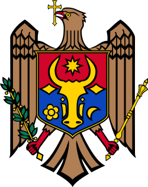
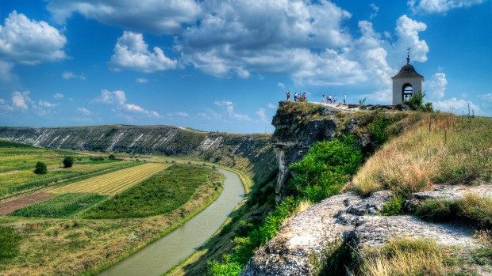

Partea 1 – Republica Moldova
Republica Moldova este un stat din sud-estul Europei, vecin cu România și Ucraina. Capitala este Chișinău, iar limba oficială este limba română. Țara este cunoscută pentru podgoriile sale, pentru peisajele deluroase și pentru complexele monastice săpate în stâncă.
Cinci obiective turistice
- Orheiul Vechi – complex arheologic și mănăstire rupestră
- Cetatea Soroca – fortăreață medievală pe malul Nistrului
- Cricova – cramă subterană cu zeci de kilometri de galerii
- Mănăstirea Căpriana – una dintre cele mai vechi mănăstiri din țară
- Castel Mimi – conac și cramă restaurată din Bulboaca
Drapelul Republicii Moldova
|
 |

Sursă externă: Republica Moldova pe Wikipedia
Înapoi sus